01 · ask
Name the feature
Point the agent at a binary, an app bundle, or a workspace and ask how it works.
See a feature. Trace the mechanism. Keep the evidence — in Cursor, Claude, OpenCode, or your own loop.
npm i -g github:arjunkshah12345-hash/reaharness
evidence: [ { kind: "observation", source: "fs_read", summary: "Query path hits indexed token store" } ] unknowns: [ { code: "RUNTIME", message: "Live ranking weights not observed" } ]
Agents that already speak MCP

Cursor
WindsurfWhy it exists
Typed tools. Evidence in every result. Unknowns left unknown. MCP for your IDE agent — CLI when you want the loop yourself.
| Surface | MCP stdio + shared CLI dispatch |
|---|---|
| Result shape | ok · evidence · unknowns · limits |
| Providers | OpenAI-compat + Anthropic Messages |
| Setup | Plan → approve → backup → write |
One loop. Clear ownership at every step.
01 · ask
Point the agent at a binary, an app bundle, or a workspace and ask how it works.
02 · tool
Filesystem, shell, git, and session memory — each with path admission and limits.
03 · return
Observations stay observations. Unknowns stay unknowns. Then ask the next question.
Observations, unknowns, and budgets travel with the payload.
Evidence
Between observations the reading drops — unknowns stay open. Same shape on every tool result.
ok · evidence · unknowns · limitsOpenAI-compatible gateways plus Anthropic Messages.
Providers
OpenAI, Anthropic, OpenRouter, Groq, Ollama, Gemini compat, xAI, and any OpenAI-compatible base URL.
reaharness agent "trace this feature"openai · Chat Completions
anthropic · Messages API
openrouter · OpenAI-compat
groq · OpenAI-compat
ollama · local OpenAI-compat
gemini · OpenAI-compat
xai · OpenAI-compat
+ together · deepseek · fireworks
Agent loop
Index the tool under the gate. Same bits on MCP and CLI — bounded turns, structured results.
.reaharness/Plan the files. Approve. Write with backups.
Hosts
JSON, TOML, YAML, OpenCode, Goose, Continue — format-aware writers, not one brittle template.
$ reaharness setup --clients=default
Setup plan:
- Cursor (mcp_json): ~/.cursor/mcp.json
- Claude Code (mcp_json): ~/.claude.json
- Codex (codex_toml): ~/.codex/config.toml
- OpenCode (opencode_json): …
- VS Code (vscode_mcp): …
- Skill: .agents/skills/agent-harness/SKILL.md
Re-run with --yes to apply.
Clone the repo, register MCP, or run the agent loop on the provider you already use.